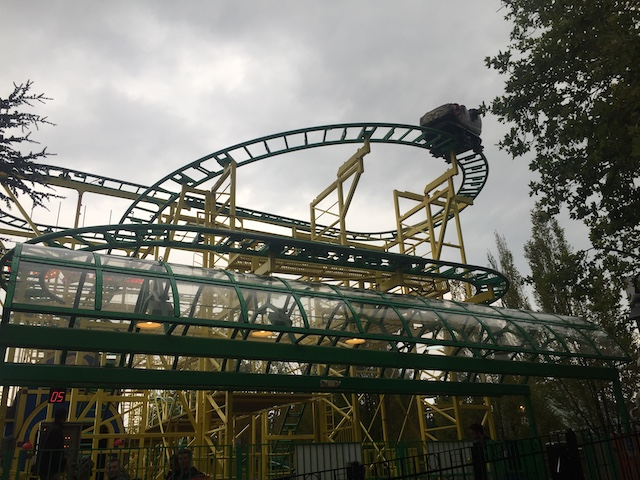

| |
Wild Mouse Review

We're here at Lagoon where we'll reveiwing the parks Wild Mouse. Now this may not seem like much, but trust me. This is easily one of the meanest and most agressive Wild Mouses out there. You will get your ass kicked on this ride. Anyways, after getting in the seats and pulling down the lap bar, you go up the lifthill. Up, up, and up you go. Near the top, if you turnaround, you can get a nice shot of the switchbacks on Wild Mouse as well as a really nice view of Wicked and Collosus the Fire Dragon. Then once we get to the top, you get whipped around a turn and set into the switchbacks. The switchbacks are fun because those turns are just great. It really whips you. This is without a doubt, one of the strongest Wild Mouse coasters. Then after going through the set of switchbacks, you are set off into a nice big turn that just pins you to the side the entire time. Then you turnaround only to go through the rides biggest drop. While it's not a very big drop. It's still fun. And the fact that there's no trim brakes makes it really good. And I mean REALLY good. Then you finally meet a set of trim brakes. Hey, considering how this ride beat us around like a rag doll so far, I don't mind. Then you come through another turnaround where we head towards the end of the ride. after another small drop, we head into the extra hump. Now actually, this hump is found on many Wild Mouse rides around the world, but because Goofy's Sky School doesn't have it, it is always refered to as the extra hump that Goofy's Sky School doesn't have. The extra hump is a lot of fun and definetly something that should be on all Wild Mouses. And of course, it beats us around. And I like that. Oh, I forgot to mention one little thing about that extra hump. It's actually inside a house. So you get some headchoppers as you nearly hit the roof as it throws you around. And if you can notice beyond the beating, you'll notice that this ride actually used to be pink and they just didn't repaint the track inside the house because it's inside. Fun little random fact. At this point, pretty much over as we turn into a final dip into the brake run. But warning. Most people stop bracing at this point and get their asses kicked because they weren't prepared. This thing stops ABRUPTLY!!! While Holly's Wilde Auto Fahrt isn't too special, I still really enjoy it and find it to be one of the best Wild Mouse coasters as it is just one of the strongest of its kind and certainly the strongest in the United States!! I normally don't recommend riding Wild Mouse coasters, but it just blends in so well with Lagoon and it's so brutal and agressive. F*ck it!!! Go ride Wild Mouse and enjoy.
7/10
Location: Lagoon
Opened: 1998
Built by: Maurer Sohne
Last Ridden: September 19, 2020
I have ridden this exact same ride at the following parks.
Dorney Park
Funtown Splashtown U.S.A
Hansa Park
Holiday Park
Six Flags New England
Wild Mouse Photos



Home
|